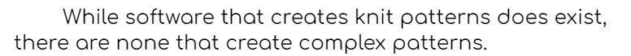

Problem Statement
While software that creates knit patterns does exist, there are none that create complex patterns.
Affinity Diagram
Text describing the diagram
Affinity Diagram

Customer and Administrator point of view
Using Kintters Dream App